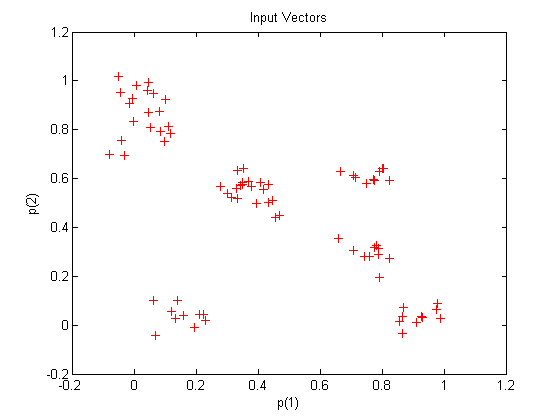
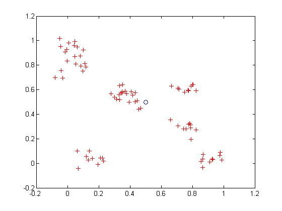

Competitive Learning
Neurons in a competitive layer learn to represent different regions of the input space where input vectors occur.
Copyright 1992-2002 The MathWorks, Inc. $Revision: 1.18 $ $Date: 2002/03/29 19:36:25 $
P is a set of randomly generated but clustered test data points. Here the data points are plotted.
A competitive network will be used to classify these points into natural classes.
% Create P. X = [0 1; 0 1]; % Cluster centers to be in these bounds. clusters = 8; % This many clusters. points = 10; % Number of points in each cluster. std_dev = 0.05; % Standard deviation of each cluster. P = nngenc(X,clusters,points,std_dev); % Plot P. plot(P(1,:),P(2,:),'+r'); title('Input Vectors'); xlabel('p(1)'); ylabel('p(2)');
Here NEWC takes three input arguments, an Rx2 matrix of min and max values for R input elements, the number of neurons, and the learning rate.
We can plot the weight vectors to see their initial attempt at classification. The weight vectors (o's) will be trained so that they occur centered in clusters of input vectors (+'s).
net = newc([0 1;0 1],8,.1);
w = net.IW{1};
plot(P(1,:),P(2,:),'+r');
hold on;
circles = plot(w(:,1),w(:,2),'ob');Set the number of epochs to train before stopping and train this competive layer (may take several seconds).
Plot the updated layer weights on the same graph.
net.trainParam.epochs = 7;
net = train(net,P);
w = net.IW{1};
delete(circles);
plot(w(:,1),w(:,2),'ob');TRAINR, Epoch 0/7 TRAINR, Epoch 7/7 TRAINR, Maximum epoch reached.

Now we use the competitive layer as a classifier, where each neuron corresponds to a different category. Here we present the input vector [0; 0.2].
The output, a, indicates which neuron is responding, and thereby which class the input belongs. Note that SIM returns outputs in sparse matrix form for competitive layers.
p = [0; 0.2]; a = sim(net,p)
a = (7,1) 1